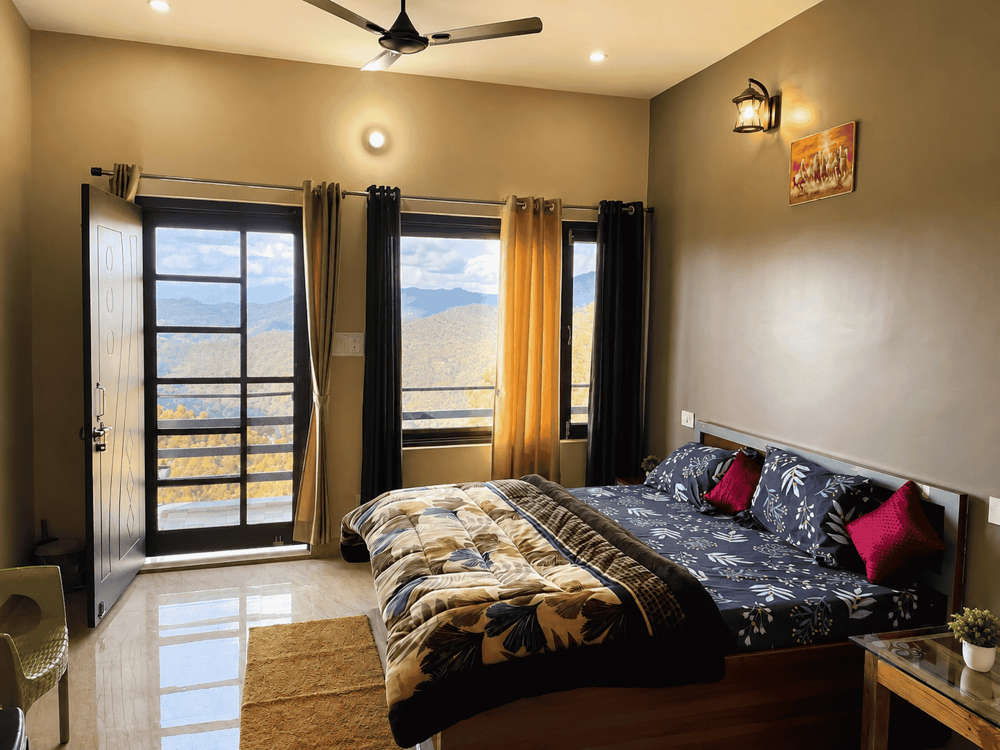
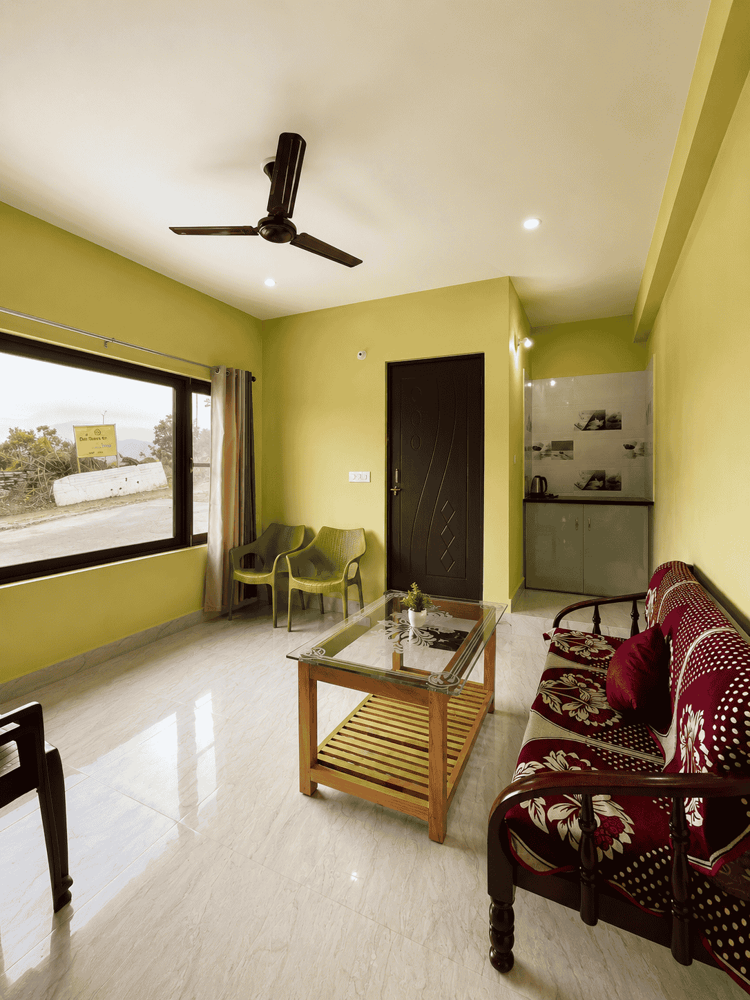
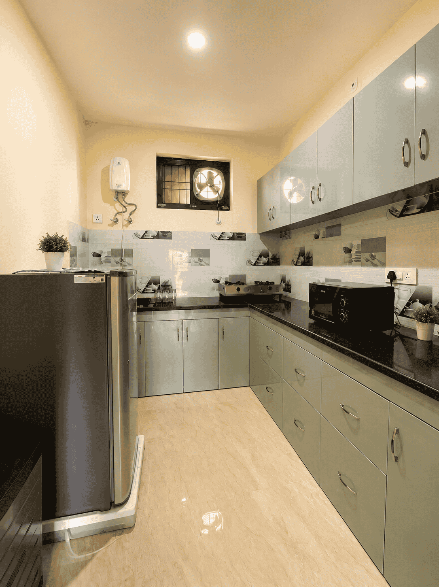
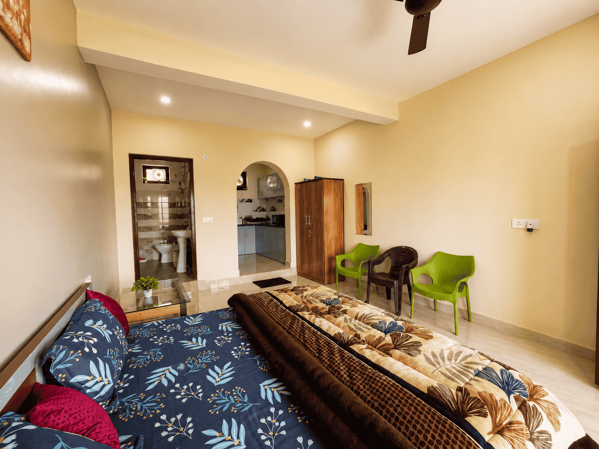
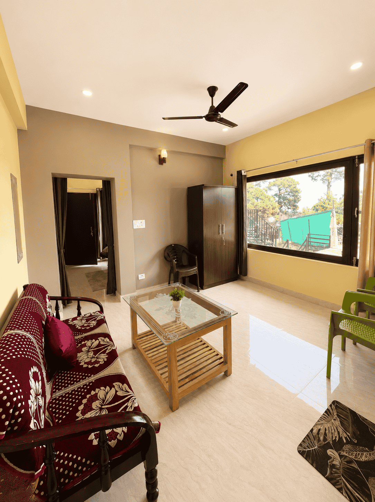
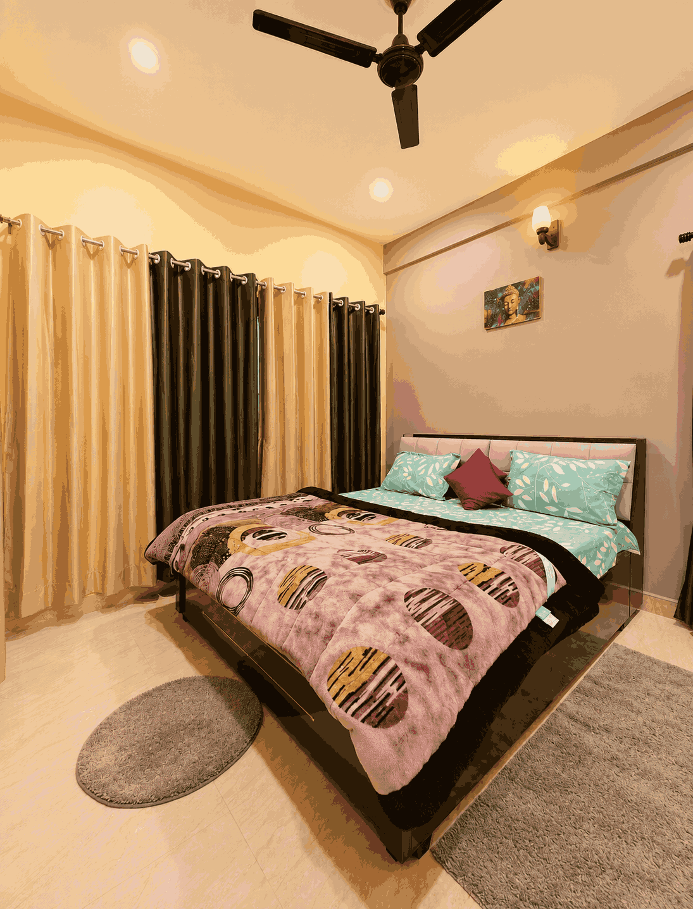

Himalayan View Retreat
Himalayan View 2BHK near Kasar Devi, Almora. Silence, sunlight, and snow-capped peaks.
Kasar is a serene 2-room retreat featuring Himalayan and valley vistas. One space includes a full kitchen setup with refrigerator and microwave; the other provides a comfortable bedroom with a lounge area.
Located near Kasar Devi on the upper Binsar road, the property is approximately a 20-minute walk from the Kasar Devi temple. It sits at a perfect elevation — high enough for panoramic mountain views, close enough to village life for morning walks and local chai.
The village of Kasar Devi has a gentle rhythm — small cafes, walks through deodar forests, and a spiritual energy that has drawn seekers for decades. Swami Vivekananda, Bob Dylan, and D.H. Lawrence all found their way here.
Suited for couples, groups, or friends seeking a tranquil, nature-focused stay. Come with a book, a journal, or just an empty mind. The mountains will fill it.





Location
Kasar is located near Kasar Devi in the Almora district of Kumaon, Uttarakhand. The area sits at a comfortable altitude with year-round accessibility and stunning views of Nanda Devi and the surrounding peaks.
Nearest airport: Pantnagar (approx. 3-4 hours drive)
Nearest railway station: Kathgodam (approx. 2.5-3 hours drive)
From Almora town: approx. 30 minutes drive